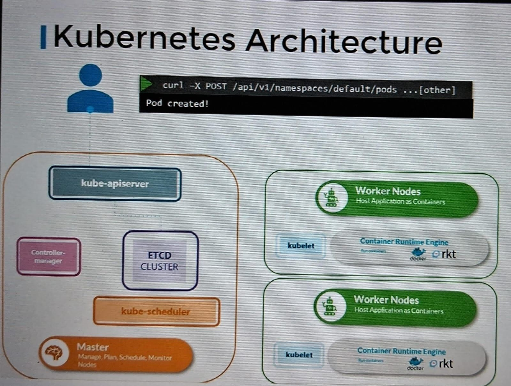

To fetch the details:
When we run KUBECTL command to get the pod details, the request will got to KUBE-APISERVER , it authenticate the user then validate the request then communicate with ETCD cluster to retrieve the data and send the detail to KUBECTL to show the pod details.
To create the Pod:
When request generated by kubectl to create a pod, this will go to APISERVER first to authenticate the user and validate the request,
So APISERVER will create pod object without assigning a node and updates the information in ETCD server and update the user that pod has been created.
APISERVER then passes the information to the KUBELET, of the appropriate worker node assigned by SCHEDULAR previously.
KUBELET then deploy a pod and instruct the CONATINER SERVUCE to deploy the container from the image.
So once the pod and container is created the KUBELET will update back to APISERVER that pod has been created and API server will updated the data ETCD cluster.
this happened every time if any change in infrastructure and KUBEAPI server will be in the center of infrastructure.